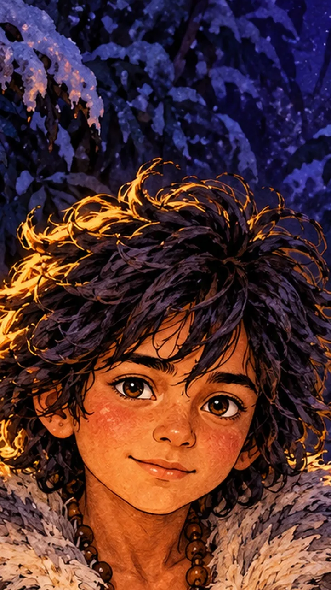
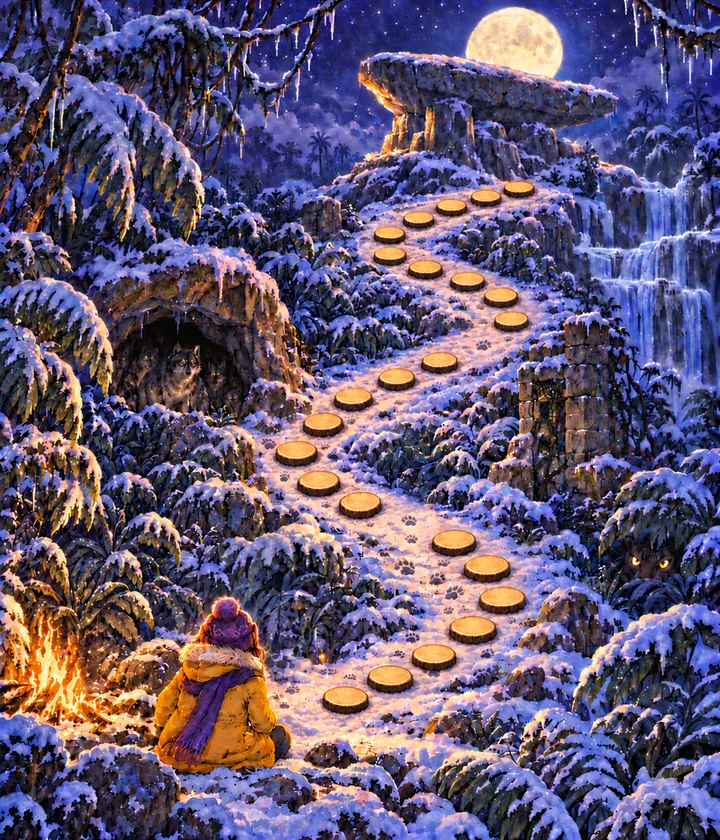
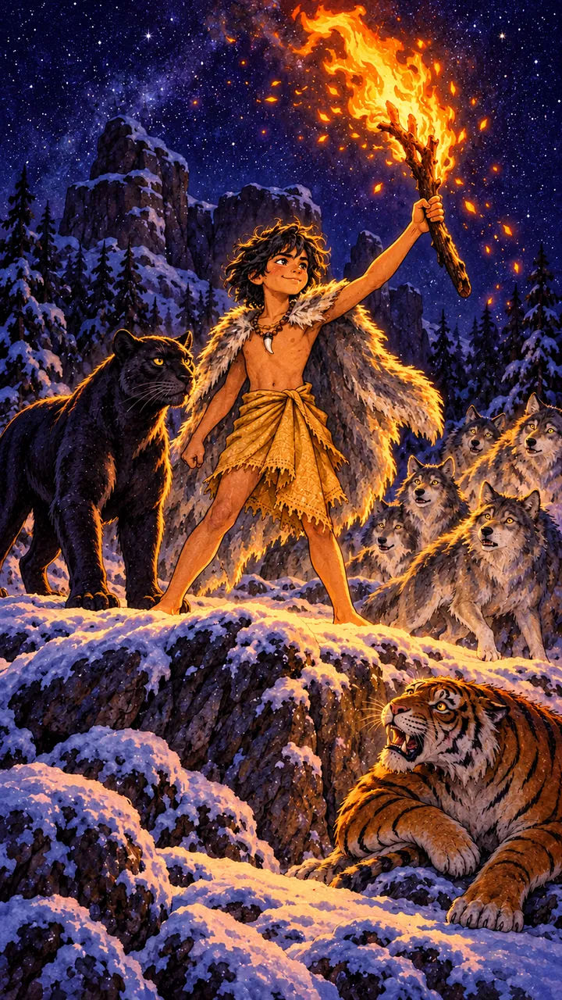

Story two. Who is playing tonight?
История 2. Выберите уровень ребёнка.

История 2 · Mowgli
Редьярд Киплинг · «Книга джунглей»
Listen! Someone is coming out of the snowy jungle…
Включите звук
Mowgli
Маугли: «Я потерял свою волчью стаю в метели. Твой костёр — как Красный Цветок… Поможешь мне?»


В заснеженных джунглях спрятаны шесть замёрзших страниц. Бросай кубик!

MowgliUnderstanding · «We be of one blood, ye and I»

История 2 пройдена
Шесть страниц книги Маугли оттаяли. Карточка Маугли и значок «Понимать других» уже на полке.
- Listening, Vocabulary, Grammar
- Reading, Writing, Speaking
- Битва за значок
У волчьей пещеры снова крошечные следы лапок и обгрызенный уголок старой карты. Что ищут мыши? Завтра к костру придёт Герда.